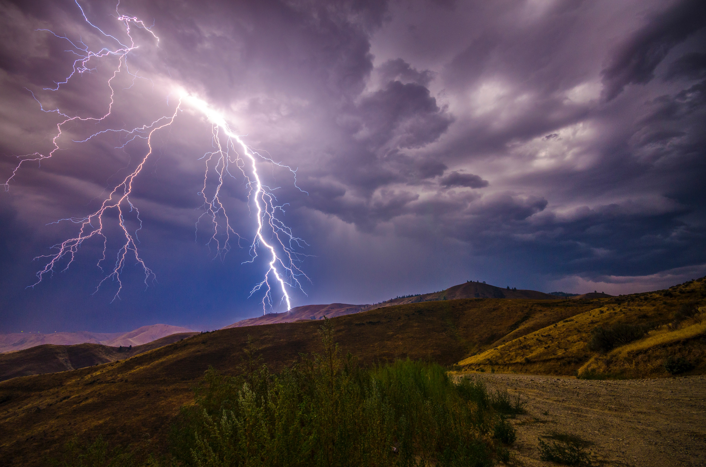
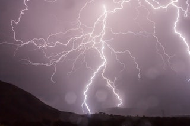

Come join us on Saturday For Preston Pancakes in the Park! 9:00 a.m. Saturday at the city park pavilion.
ACTION WEATHER
Bringing Lighting Quick Weather Updates to Franklin County
A Storm is Rolling Over the Hills.There is a Chill in the Air Today.

Lightning in a Barren Field.The Sun Peering Through the Storm.What a Beautiful Sound That Rain is Making.Cold, formidable, Imposing, and Very Majestic

Lighting up the Beautiful Night SkyStill Have Miles to go Before I Sleep.This is What True Peace Feels Like